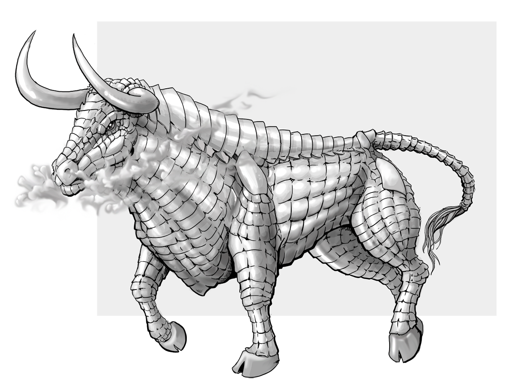

Complete Monster
by
Radaghast Kary
← Gorgimera
↑Index↑
Gorgosaur →

Illustration by Mariana Ruiz Villarreal,
Public Domain
Gorgon
Members:
Iron Gorgon
Storm Gorgon
5e
Unaligned
D&D 5 facts
Size: Large
Type:
Monstrosity
CR: 5
D&D 5 sources
Monster Manual
, p. 171
Xanathar’s Guide to Everything
, p. 98
D&D 5 links
Gorgon in 5e d20 SRD
Gorgon on AideD&D
3e
TN
D&D 3.0 facts
Abilities: Str 21, Dex 10, Con 17, Int 2, Wis 12, Cha 9
AC: 18 (-1 size, +9 natural)
Advancement: 9-15 HD (Large); 16-24 HD (Huge)
Attacks: Gore +12 melee
CR: 8
Damage: Gore 1d8+7
HD: 8d10+24 (68)
Initiative: +4 (Improved Initiative)
Organization: Solitary, pair, pack (2-4), or herd (5-13)
Qualities: Scent
Reach: 5 ft. by 10 ft./5 ft.
Saves: Fort +9, Ref +6, Will +3
Size: Large
Skills: Listen +8, Spot +8
Speed: 30 ft.
Terrain: Temperate and warm land and underground
Treasure: None
Type:
Magical Beast
D&D 3.0 links
Gorgon in 3.0 d20 SRD
D&D 3.5 facts
Type:
Magical Beast
Size: Large
CR: 8
D&D 3.5 sources
Monster Manual
, p. 137
D&D 3.5 links
Gorgon in 3.5e d20 SRD
Pathfinder sources
Bestiary
Pathfinder links
Gorgon in Pathfinder 1 SRD
1e
BLUEHOLME sources
BLUEHOLME Journeymanne Rules
BLUEHOLME links
Gorgon Dreamscape Design
0e
OD&D facts
Number Appearing: 1-4
AC: 2
Move: 12
HD: 8
Chance in Lair: 50%
Treasure: Type E
OD&D sources
Monsters & Treasure
, p. 3
N
S&W
facts
AC: [17]
Attacks: gore (2d6)
HD: 8
HDE: 10
Move: 4
Special: Breath turns to stone
XP: 1400
S&W
sources
The Blue Book of Dangers and Dweomers
, p. 87
{kind=link}